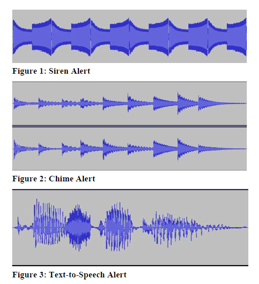
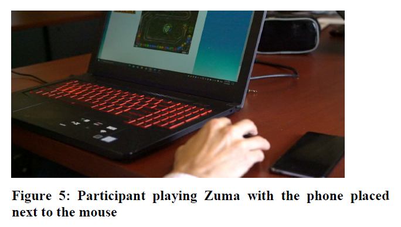
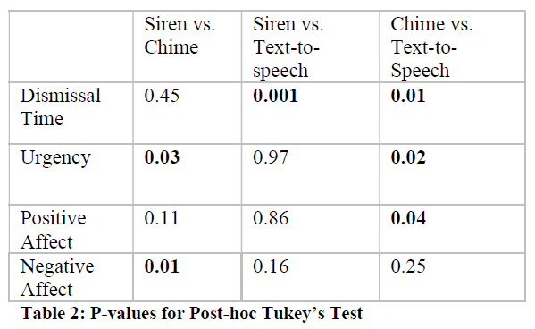
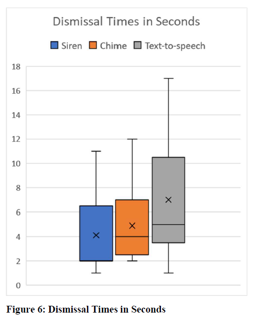
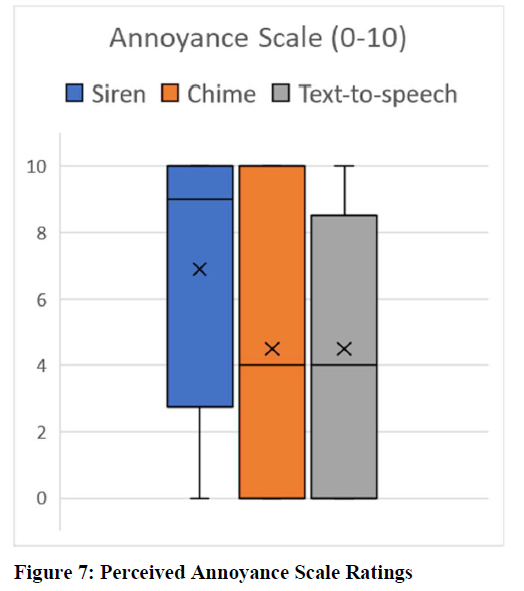
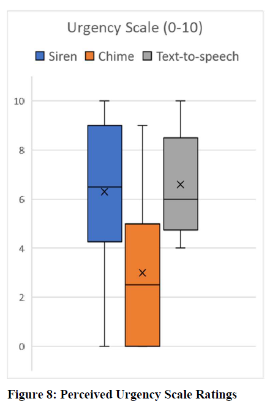
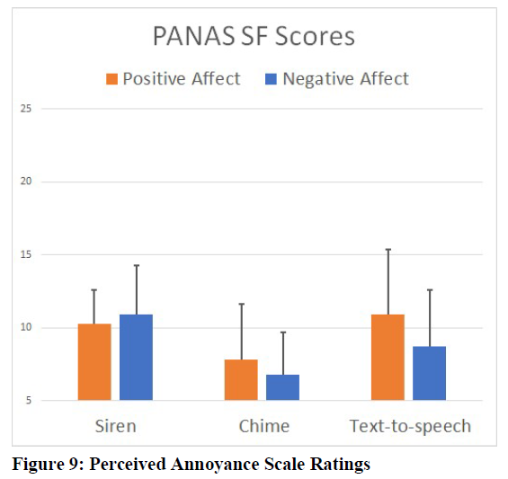

Project Overview
Dates: January - April 2020
Description: How does the sound chosen for mobile emergency alerts (e.g. Amber alerts, environmental hazard warnings) influence how a person interacts with the alert message displayed on-screen? This study examines participant reactions to 3 alert sounds and discusses recommendations to improve mobile emergency alert sound design.
Team Members: 2 peers taking the MSCI 630 graduate-level Human Computer Interaction course run by Professor Mark Hancock
My Contributions: I participated in all stages of the experiment design including the initial literature review, participant recruitment, pilot study and lab study facilitation, and statistical analysis.
Methods Used:
Within-participants Lab Study
Mobile Alert Simulation
Response Time Measurement
Perceived Urgency Questionnaire
Perceived Annoyance Questionnaire
PANAS Questionnaire
ANOVA & Post-hoc Analysis
Abstract
Canada launched Alert Ready, an emergency alert system
that directly communicates emergency warnings and
information to citizens via their personal mobile devices, in
2015 but has received a large volume of criticism. Some of
the major criticism from the citizens as found by a
nationwide survey performed on November 27, 2019, were
the need to improve the sound ofthe alerts. A lab study was
conducted to investigate how participants perceived and
interacted with simulated mobile alert messages with three
different sounds (Siren, Chime and Text-to-speech) while engaged in a gaming task.
Participants were particularly observed for reactions and
dismissal times during the study. They were provided a
post-task questionnaire to report their perceived annoyance,
perceived urgency, and positive and negative affect after
the task. Results found significant differences in dismissal
times, perceived urgency and positive and negative affect
between the three sounds. There was no significant
difference observed for perceived annoyance. With these
results, the authors discuss various ideas for future studies
on mobile emergency alert sound design.
Author Keywords:
Mobile Emergency Alerts; Warning Sound Design; Auditory Perception; Behavioural Measures; Lab Study
Figures & Tables:







Click here to read the full paper


{kind=link}
{kind=link}
{kind=link}
{kind=link}
{kind=link}
{kind=link}
{kind=link}
{kind=link}
{kind=link}
{kind=link}
{kind=link}
{kind=link}
{kind=link}
{kind=link}
{kind=link}
{kind=link}
{kind=link}
{kind=link}
{kind=link}
{kind=link}
{kind=link}
{kind=link}
{kind=link}
{kind=link}
{kind=link}
{kind=link}
{kind=link}
{kind=link}
{kind=link}
{kind=link}
{kind=link}